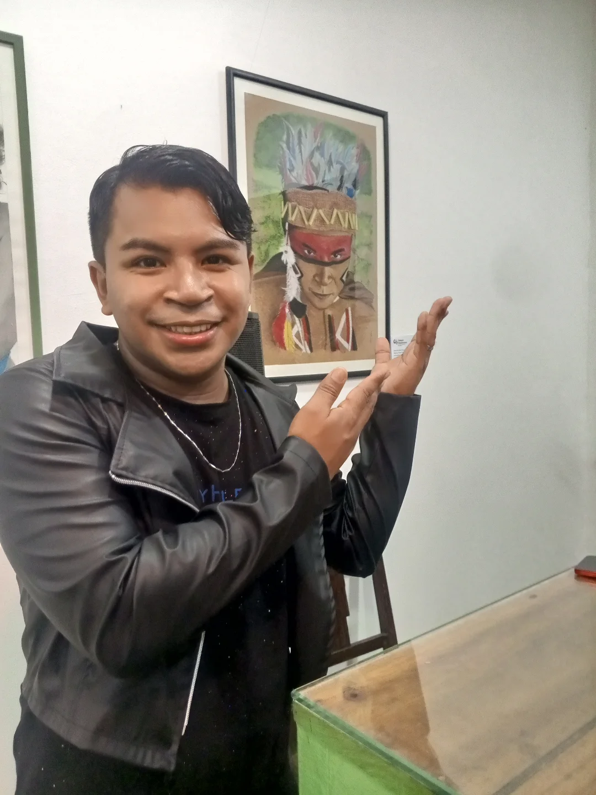
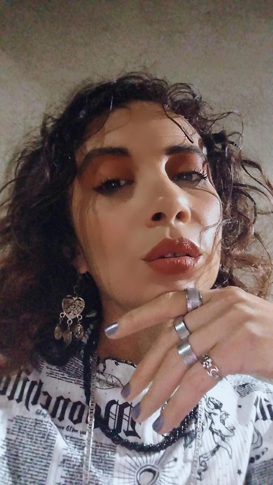
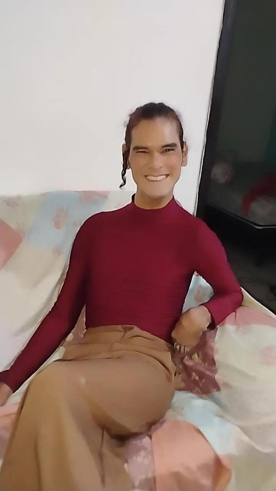

Obras que atravessam o corpo como arquivo íntimo e coletivo.
Ambiente imersivo que envolve o visitante em uma experiência sensorial completa.
Rua Lamartine Nogueira, 787, Centro, Viçosa do Ceará/CE.
Corpos Plurais
Artistas da Mostra
Conheça os artistas que compõem a narrativa da exposição Corpos Dissidentes, trazendo diferentes perspectivas sobre identidade, território e presença.

Chaguinha Rickley
Multiartista
Instagram
Chaysler Emmanoel
Cantor e Compositor
Instagram
Elke Falconiere
Travesti, arte-educadora, atriz, poeta y produtora cultural
Instagram
José Marcos
Estudante de letras e artista multimídia independente
Instagram
Katrinah
Multiartista
Instagram
Sérgio Diaz
Artista, cantor, ator e poeta
Instagram
Tsumbe Maliya
Dançarino, contador de histórias, arte-curandeiro, agente cultural
Instagram
Zuza Amorim
Artista, cenógrafa e expografa do projeto Corpos Dissidentes
Instagram
John-Elma
Artista, cenógrafa e expografa do projeto Corpos Dissidentes
InstagramAmbiente
O Espaço da Mostra
Registros da montagem e do percurso expositivo na Galeria Horizonte Vivo.
Formação
Oficinas e Vivências
A poética de ser quem se é através do fazer artístico. Momentos de troca, mediação cultural e experimentação prática.
Destaque
Oficina “Corpo: palavra e criação”
A oficina “Corpo: palavra e criação” é uma vivência onde o corpo vira ponto de partida para expressão e criação. A partir de textos, imagens, poesias, músicas e reflexões sobre o corpo, os participantes são convidados a explorar ideias, emoções e histórias usando a palavra, a imagem e o movimento.
Inspirada nos conceitos de corpo-casa — o corpo como morada de memórias, afetos e vivências — a oficina convida cada participante a se reconhecer como território vivo. Nas cartografias do corpo, esse território se revela como um mapa único, atravessado por encontros, marcas e movimentos. Nesse percurso, cada traço, gesto, lembrança e sensação pode se tornar elemento de criação.
Durante os encontros, vamos trabalhar com diferentes formas de expressão artística, como poesia, desenho, colagem, escrita criativa e práticas corporais, experimentando possibilidades de criação que conectam o sentir, o pensar e o fazer.
Técnica e Prática
Oficina de Técnicas Mistas com Jonas Gomes
Metodologia e proposta
Serão realizadas atividades práticas voltadas à criação e à expressão artística, convidando todes os participantes a criarem a partir de suas próprias experiências, memórias afetivas e cosmologias. A oficina estimula a reflexão sobre a arte como ferramenta de subjetivação e transformação, promovendo a sublimação e a subversão criativa.
Conteúdos abordados
- Desenho de observação à mão livre;
- Variedade e manuseio de materiais utilizados no processo de criação artística;
- Processos de pesquisa, criação e experimentações em artes visuais.
Público-alvo
Pessoas interessadas em experimentar linguagens artísticas de forma inclusiva e sensível às suas trajetórias pessoais.
Criador
Jonas Gomes
Sobre o autor
Artista visual, músico, poeta e produtor cultural de Viçosa do Ceará. Preto-indígena e periférico, licenciado em música pela UFC, atua no cenário cultural desde 2015. É co-criador do coletivo periférico “Rastêra Produções”.
Poética
Sua obra investiga o corpo como arquivo e território vivo. A criação artística é vista como ferramenta de subjetivação e subversão, buscando a aceitação e o reconhecimento da beleza nas particularidades de cada corpo retratado.
Trajetória
II, IV e 10 Anos Norte Bienal de Arte; I Mostra Sesc de Arte Visual de Sobral (2024); INDIVIDUAIS: Fios soltos (2015); A Cidade em que habitas (2022); Pormenores (2025); Corpos Dissisdentes (2026).
A Mostra
Sobre a exposição
Proposta
O projeto “CORPOS DISSIDENTES: IDENTIDADE E PLURALIDADE EM EVIDÊNCIA” propõe a realização e exposição de 12 obras em técnica diversas, voltadas à representação de corpos diversos, atentado para belezas particulares e desafiando padrões idealizados. A diversidade de técnicas reflete a diversidade que nos compõe, através de uma formação que aflora a poética de ser quem se é.
Programação
Quarta e Quinta-feira
08h às 11h | 14h às 17h
Sexta-feira a Domingo
08h às 11h | 14h às 17h | 19h às 22h
*Oficinas e mediações escolares sob agendamento.
Experiência
O percurso alterna imagens ampliadas, objetos suspensos e trechos sonoros para construir uma visita intensa, sensorial e reflexiva, aproximando corpos reais e pessoas reais, livres de filtros ou edições.
Conexão
Contato e Apoio
Atendimento
Telefone: +55 88 9230-7620
Instagram: @corposdissidentesid
Localização
Galeria Horizonte Vivo
Rua Lamartine Nogueira, 787, Centro
Viçosa do Ceará/CE.
Parcerias
ESTE PROJETO É APOIADO PELO MINISTÉRIO DA CULTURA E PELA SECRETARIA DA CULTURA DO CEARÁ, COM RECURSOS PROVENIENTES DA LEI FEDERAL N.º 14.399 DE JULHO DE 2022.